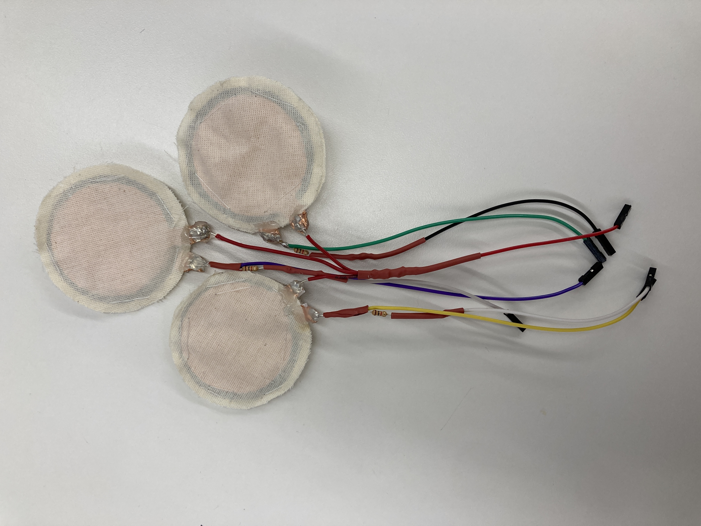

Final Project: Smart Saddle
Proposal
Note: Weeks 10 and 11 (Machine Building and Computer Programming) are incorporated into the final project and do not have their own page on my site.
Research Question: How can a bike seat be more comfortable?
Proposal: My proposal for the final project is to create a bike seat that is more comfortable. Comfort here means two things: reducing pain from long periods of riding on the seat, and preventing rubbing. The comfort of the bike seat is influenced by material, form, padding, how well the seat is adjusted to the biker, as well as other factors. Initial ideas for how to achieve a better seat are as follows.
- Creating a bike seat that can be adjusted automatically (through sensing pressure, a phone-based app, other methods) without the rider having to get off of their bike seat
- Rethinking the form of the seat to prevent rubbing and non-ideal body positioning
Justification: The design of the bike seat or saddle has remained essentially the same since its invention, with small design tweaks over time. Because of the bike seat design, cyclists are more prone to urethral stricture, UTIs, genital numbness, and saddle sores, all of which can lead to long term health problems.
Project Description
For the final project I tackled one piece of creating a bike seat that reads in rider data to be able to change form. I created 3 pressure sensors that attach to the seat in order to show the rider their pressure distribution on the saddle.
Materials used: ESP32 Wires, heat wrap, solder To make pressure sensor: velostat, fabric, copper sheet, needle and thread
Skills used: Coding - arduino, processing Hand fabrication - pressure sensors Soldering
Prototype
In the process of testing my concept, I used 2 FSR sensors, one of which I made, and Processing to create the visualization. The idea behind the visualization is that each circle, representing a sensor, changes color based on how much pressure is being applied to the sensor. The most difficult part of the prototype was passing data between arduino and processing. I ended up having to convert the values between integers and strings a couple of times.

Making the Sensors
As mentioned in week 6 (LINK) I used fabric to make the sensors. They worked well in that they are flexible and can form to the seat. One issue is that the sensors do not start their readings at 0. This could be because of the thread running through them. I also think they could benefit from having some type of additional layer (such as silicone) around the outside of them in order to make them less sensitive.

Circuit
Final Version
Final Arduino Code
// Load Wi-Fi library
#include
// Replace with your network credentials
const char* ssid = "MAKERSPACE";
const char* password = "12345678";
String analogReadMap1;
String analogReadMap2;
String analogReadMap3;
String values;
// Set web server port number to 80
WiFiServer server(80);
//// Variable to store the HTTP request
//String header;
//
//// Assign output variables to GPIO pins
//const int FSR = 26; //the FSR is connected to analog pin 0 (A0)
// sensor pins
//34, 35 pins are ADC1 (allow for wifi), and input only
//32, 33 pins are ADC1 (allow for wifi), and allow for input or output
#define FORCE_SENSOR_PIN_1 34 // ESP32 pin GIOP36 (ADC0): the FSR and 10K pulldown are connected to A0
#define FORCE_SENSOR_PIN_2 35
#define FORCE_SENSOR_PIN_3 33
//int FORCE_SENSOR_PIN_1 = 36;
//int FORCE_SENSOR_PIN_2 = 37;
int sensorValues[] = {0, 0, 0}; //array of FSR values
void initWiFi() {
//Station mode - ESP32 connects to an access point (router)
WiFi.mode(WIFI_STA);
WiFi.begin(ssid, password);
//NOTE: sometimes you need to returrn certain values for these to print
Serial.print("Connecting to WiFi ..");
while (WiFi.status() != WL_CONNECTED) {
Serial.print('.');
delay(1000);
}
Serial.println(WiFi.localIP());
}
void setup() {
//why is this necessay?
// should these be inputs or outputs?
pinMode(FORCE_SENSOR_PIN_1, INPUT);
pinMode(FORCE_SENSOR_PIN_2, INPUT);
pinMode(FORCE_SENSOR_PIN_3, INPUT);
// digitalWrite(36, HIGH);
// digitalWrite(37, HIGH);
Serial.begin(115200);
initWiFi();
Serial.println("RRSI: ");
Serial.println(WiFi.RSSI());
}
void loop() {
// digitalWrite(FORCE_SENSOR_PIN_1, HIGH);
// digitalWrite(FORCE_SENSOR_PIN_2, HIGH);
int analogReading1 = analogRead(FORCE_SENSOR_PIN_1);
int analogReading2 = analogRead(FORCE_SENSOR_PIN_2);
int analogReading3 = analogRead(FORCE_SENSOR_PIN_3);
// outpout these values with IDE
sensorValues[0] = analogReading1;
sensorValues[1] = analogReading2;
sensorValues[2] = analogReading3;
Serial.println((String)analogReading1 + "," + (String)analogReading2 + "," + (String)analogReading3);
delay(1000); //delay for 1 second
}
Final Processing Code
import processing.serial.*;
Serial myPort;
String value = "0";
int circDiameter = 100;
int canvasSize = 600;
void setup () {
//size(canvasSize, canvasSize); // set up the window to whatever size you want
fullScreen();
println("INIT");
println(Serial.list()); // List all the available serial ports
//String portName = Serial.list()[Serial.list().length - 1];
myPort = new Serial(this, "/dev/tty.usbserial-1420", 115200); // initializing port
myPort.clear();
myPort.bufferUntil('\n'); // don’t generate a serialEvent() until you get a newline (\n) byte
background(255); // set inital background
//smooth(); // turn on antialiasing
}
void draw () {
if (myPort.available()>0) //checking whether there is incomming serial values
{
value = myPort.readStringUntil('\n');
}
if (value != "0") {
}
delay(10);
int[] colors = int(split(value, ","));
String[] col = split(value, ",");
if (colors.length > 1) {
//println("array: " + colors);
println("first element: " + col[0]);
println("second element: " + col[1]);
circle(200, 300, circDiameter); //circle(x,y,diameter)
fill(colors[0]);
circle(400, 300, circDiameter); //circle(x,y,diameter)
fill(colors[1]);
//circle(canvasSize-canvasSize/3, canvasSize-canvasSize/3, circDiameter); //circle(x,y,diameter)
//fill(sensorValue[0]);
//circle(canvasSize/3, canvasSize/3, circDiameter); //circle(x,y,diameter)
//fill(sensorValue[0]);
}
}